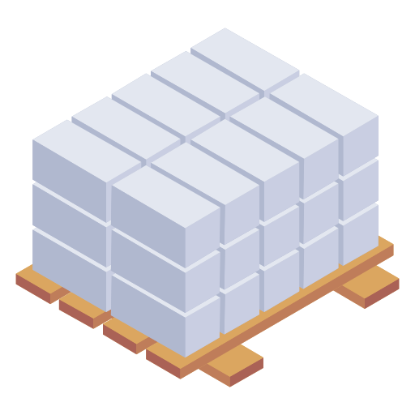
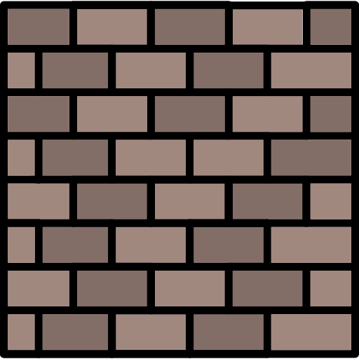

Stone Bricks Only is a building supply company that provides bricks made from stone, besides the other building materials and things that go with them. The main plant is located somewhere far from civilization for safety and environmental reasons, but we do have a warehouse in Ottawa for delivery. Starting in 2002, we have developed a process for extracting stone that is sustainable and with the minimum of environmental impacts. We sell bricks that are precisely cut for fit, and not just that, but tile floors and pavers that match the bricks, the mortar you need to bond them together, a bunch of beams, plates, and girders to build stronger buildings, and much more. Our belief is that stone is the most abundant material on Earth, and therefore should be used more often in construction.
Our highly qualified staff is committed to out mission of promoting the use of stone bricks. We offer a large product lineup of our modular bricks and other parts with reasonable and competitive rates, as well as flexible hours. You can read about what some of our satisfied customers have to say. If you have any questions, want to learn more, give us a review, or order non-standard bricks, please fill out our inquiries form. We also have links to other websites of interest, if you want to learn more about Earth's geology or compare our lineup to the competitors.